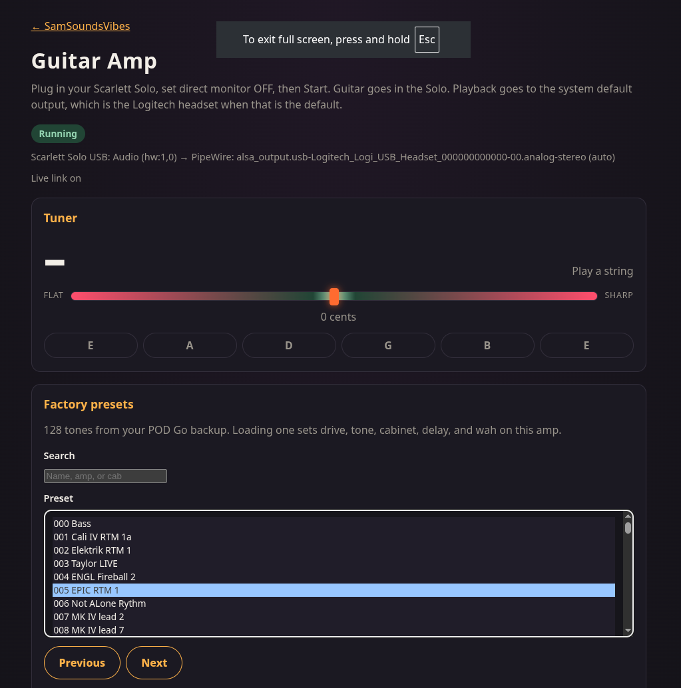
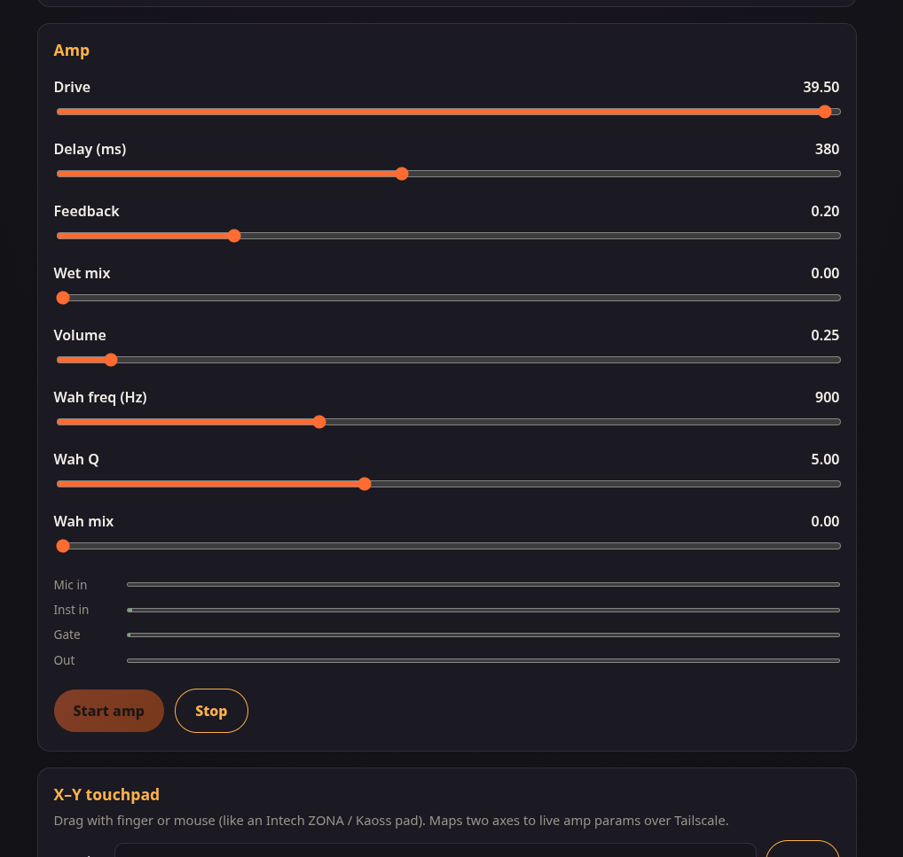
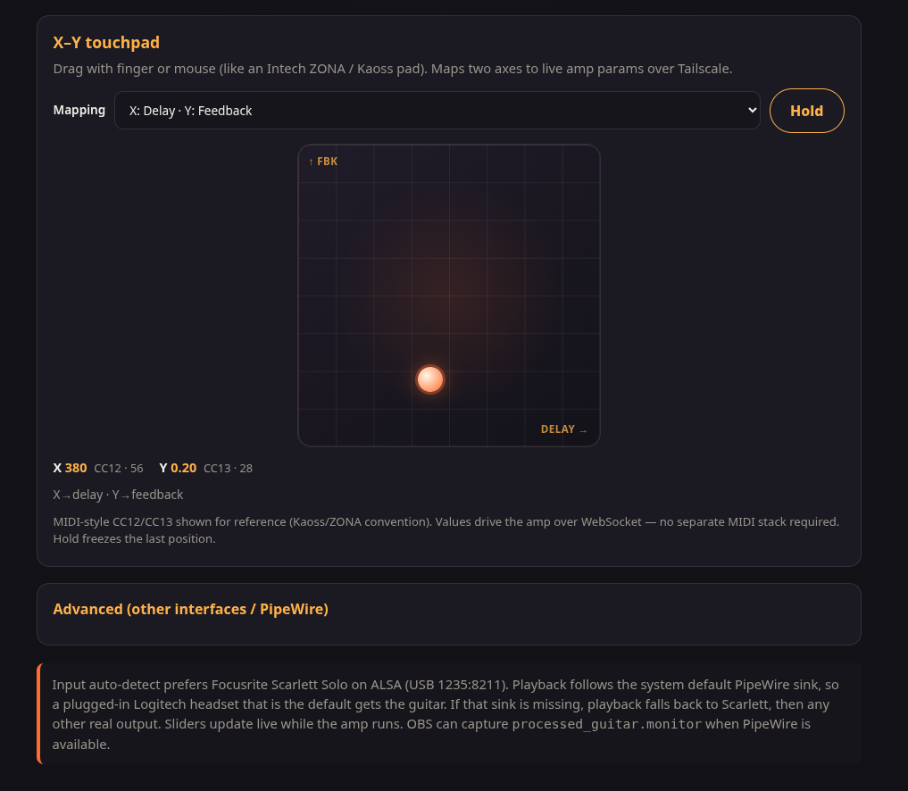
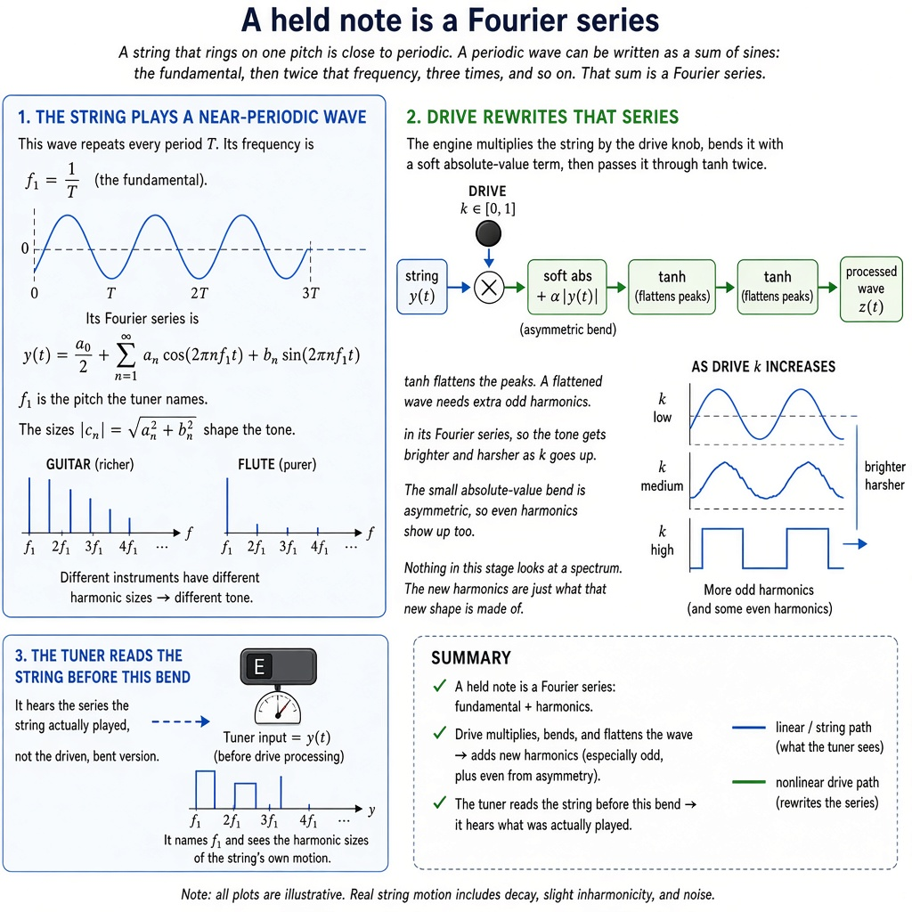
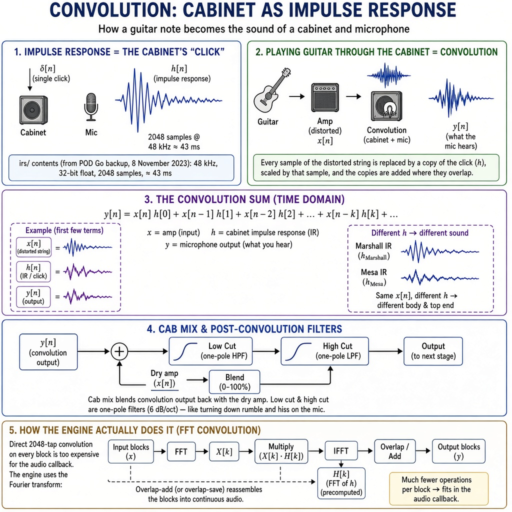
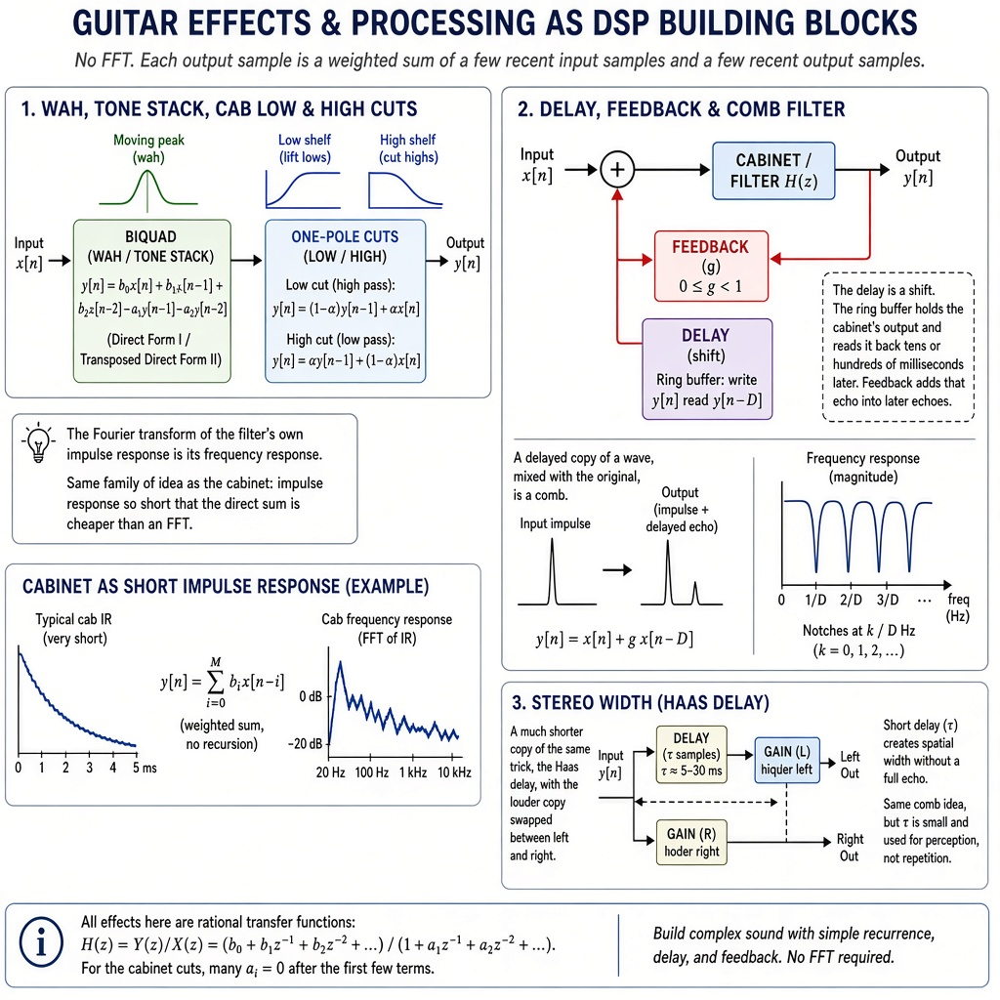
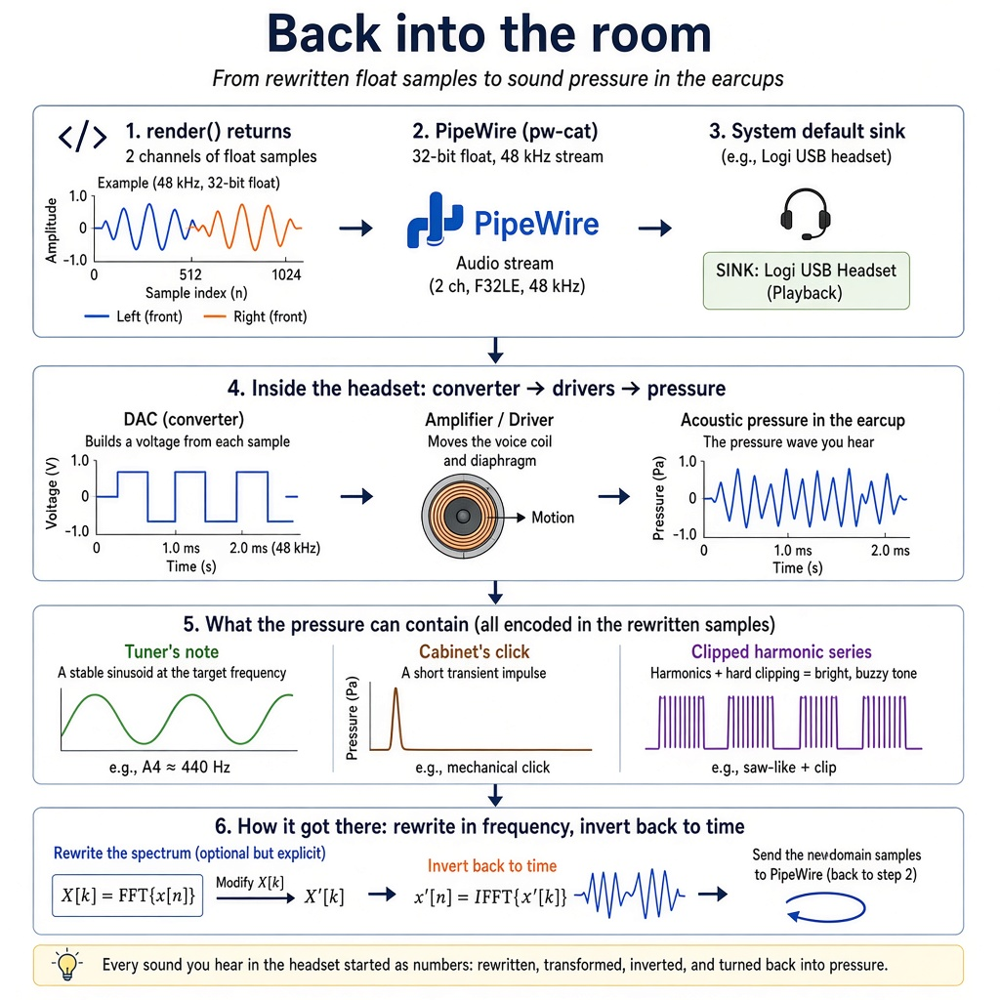

"Original Music & Stylish Covers"
From Boston's "Consultones" to Austin's creative rebirth



The amp, live: a screen recording of it running.




Sam and his brother wrote this song and recorded it. It is based on real events. The chart is in C major at 94 bpm.
Written and recorded by Sam and his brother. Based on real events.